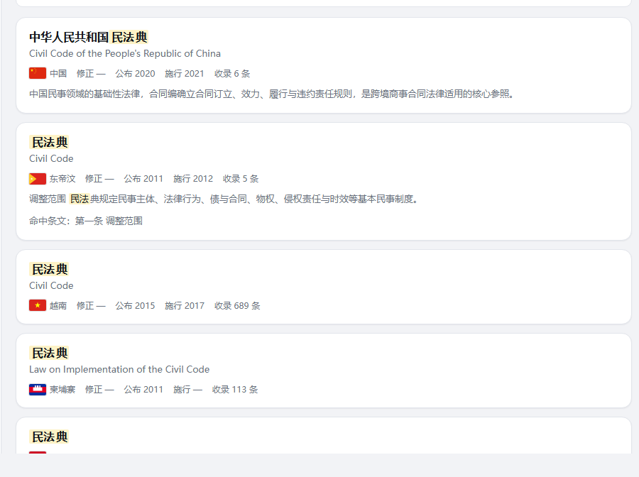
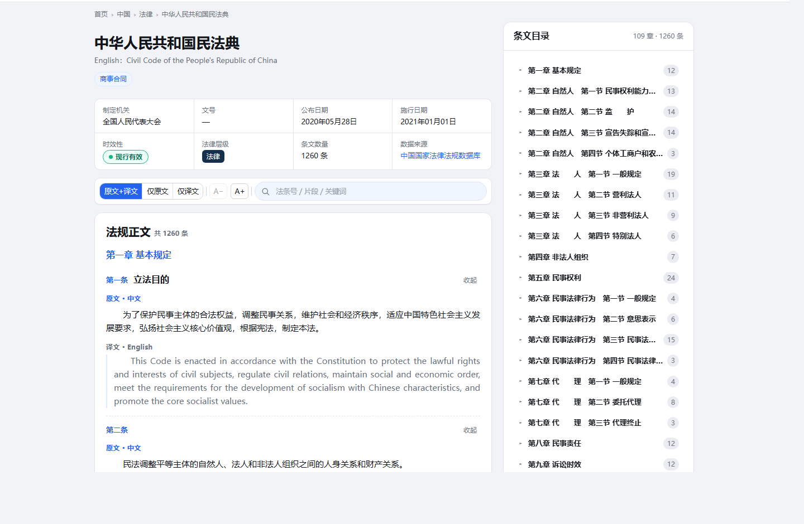

GB/T 7714-2015
国内学术写作的通用参考文献格式。按「责任者 · 题名 · 文献类型 · 出处」组织要素。
- 法规名称（含公布机关）
- 公布日期与施行日期
- 来源平台与访问路径
2026 中国（广西）—东盟「AI+法律」应用创新大赛 · 高校学生赛道
面向 12 法域的法律检索、跨语言比对与可溯源 AI 问答平台
把中国与东盟十国、东帝汶的官方法规文本，做成可检索、可对照、可引用的工程系统——不是把法规堆在网页上，而是让每一条结论都能回到条文原文。
prototype/index.html 即可运行01为什么需要它
涉外法治与区域经贸合作，先要「查得到、查得准、引得起」。现有做法在覆盖面、语言和可信度上都不够，人工查证的边际成本很高。
中国 + 东盟十国 + 东帝汶，12 个法域、12 套官方发布渠道；同一概念在各国写法、条号体例都不相同，逐一查证耗时。
后果：查全一个问题的成本，往往高于读法条本身。
泰文、越南文、印尼文、马来文……中国用户读东盟法条依赖人工翻译；反过来，东盟用户读中国法规同样困难。
后果：机翻读得懂，但无法回溯到原文，也不敢直接引用。
检索结果来自哪里、什么时候抓取、条文是否完整，常常无从核验；引注格式不统一，写作时还得手工拼装出处。
后果：写进文书或报告的依据，经不起对方追问来源。
通用大模型答得流畅，却常把不同国家的条文混在一起，甚至给出并不存在的条款，且不提供可点击的出处。
后果：看起来都对，用起来不敢用。
02方案总览
数据以「一法一 JSON」为唯一权威，检索走 BM25 + 向量 + RRF 融合，问答只返回带条文出处的依据。三层职责清晰，任何一层都可以单独替换。
laws/<法规ID>.json 一法一文件，可 diff、可逐部替换
按需加载的全文分卷，与权威存储逐条比对
21 个分卷，与原文物理分离，运行时合并
SQLite 与向量索引均可随时重建
法规全称、文号、条号等精确匹配的第一命中来源
同义改写与跨语言召回，条文级索引
只看排名，无需归一化，也无需为每个查询调参
把法域识别为检索条件，避免跨国条文混召回
多维筛选、原文与译文逐条对照、条文目录
两国原文并排，五个维度提供对照框架
中英术语对照；四种规范引注格式导出
只答库内条文，每条结论附法规名与条号
每部法规都能回答「从哪来、何时抓取、是否完整」，可点回官方页面核验。
原文与 AI 译文分层呈现、逐条对照；译文标注引擎，永不写回原文正文。
问答只返回库内条文依据，每条结论附出处；没有出处就不作答。
03产品演示
以下均来自真实产品：两张界面截图摄于 2026-10-24；比对、问答与术语中的法条文字，逐字取自权威存储的 25 部真实样本。
用 ←→ 键切换 · 当前 01 / 06 · 左右滑动切换
支持关键词、自然语言与条号三种入口；结果卡片直接给出国别、公布日期与命中条文，避免逐部点开。
110 题弱标注评测集，绝对值偏低估，看相对提升。

译文单独分区、标注引擎，绝不写回原文正文；右侧条文目录按章组织，长法规也能快速定位。

选 2–3 个法域的条文，按五个维度并提供排对照框架。下面这段中越条文，逐字取自库内真实数据。
比对维度 · 按需选择，从上到下逐维对照
已知限制：单条条文常只涉及其中 1 个维度，比对报告因此偏薄（详见路线图）。此处只并列原文与维度框架，不生成结论性判断。
在真实产品中做比对问题 → 命中条文原文 → 法规名与条号 → 可点开的出处。回答可以短，但出处必须完整。
引注要素全部取自库内元数据（法规名、条号、公布日期、来源平台），不做拼装式猜测。详情页「下载与引用」可导出四种格式。
国内学术写作的通用参考文献格式。按「责任者 · 题名 · 文献类型 · 出处」组织要素。
英美法写作常用的引注体例。按「法域缩写 + 法规名 + 条号 + 年份」组织要素。
正文夹注用的短格式，只保留定位所需的最小要素。
首次引用或正式报告的完整格式，要素最全。
这里只说明格式要素，不给出示例引注字符串：完整引注由详情页按库内真实元数据生成，避免出现不存在的文号或日期。
到详情页看「下载与引用」与产品同一套数据结构。这里只内置 25 部样本，完整库为 18,785 部；点开任一结果可查看元数据并跳转到真实产品。
样本取自 prototype/data/laws/ 的 12 个法域；条号、日期、层级与原文一致，未做改写。
04数据底座与治理
按法域统计的法规数取自权威存储 laws/index.json，合计与总数严格一致；数据库与向量都只是派生视图，随时可以从权威存储重建。
条形长度按法规数等比缩放，极小值保留最小可见宽度。覆盖不均衡（菲律宾、新加坡占比较高）是已知问题，已列入路线图的「覆盖率提升」。
laws/<法规ID>.json
18,785 个文件，一法一文件；便于人工审查、diff 与逐部替换。
按需加载的全文分卷，与权威存储逐条比对（verify-fulltext.js）。
由 backend/build_db.py 生成，首次约 7 分钟；单文件可整库备份。
约 310 MB；滞后于当前库，已列入短期路线。
不是口号，而是校验器会检查的工程约束。
prototype/ 单独拷走即可运行7 个数据校验器 + 全量 JS 语法检查已接入 CI；另有 13 项后端自测。
verify.js数据与引用完整性verify-data.js逐文件统计一致性、条号唯一verify-data-home.js11 项数据自足性检查（A1–A11）verify-fulltext.js分卷与权威存储逐条比对test-trans-layer.js译文层结构与懒加载check-i18n.js界面文案键值完整（870 键）scan-forbidden2.js项目红线禁用表述node --check全量 JS 语法检查05技术架构
同一套前端兼容纯静态与后端两种形态；检索质量与响应时间都是实测数字，不是估计值。
前端
<script>，无打包器、无框架运行时file:// 与 http(s):// 自动切换数据源检索
后端
/api/*推理
检索 P@3
16.7%
纯 BM25 为 5.7% · 相对 +11.0pt
国别准确率
99.1%
纯 BM25 为 26.4% · 相对 +72.7pt
检索 P50
0.3–0.6 s
后端形态，单机实测
首屏时间
0.68 s
纯静态形态为 4.2–4.45 s
SQLite 库
1.22 GB
建库约 7 分钟 · 可整库重建
校验状态
全绿
7 校验器 + 全量语法 + 13 项后端自测
评测口径：110 题弱标注评测集（含 4 道负例），金标为按关键词 IDF 机械挑出的候选，绝对值偏低估真实效果，应看相对提升而非绝对分数。
06差异化
通用大模型答得顺，商业数据库收得全，官方门户最权威——但它们都不是为「跨 12 法域、可引用、能离线」准备的。
| 维度 | 本方案 · CALR | 通用大模型 | 商业法律数据库 | 官方门户 |
|---|---|---|---|---|
| 法条出处 | 逐条附官方来源，可点回核验 | 常无出处，或出处不可核验 | 有出处，多为内部加工版本 | 原文权威，但单一法域 |
| 编造风险 | 只返回库内条文；没有出处就不作答 | 存在幻觉，条款可能并不存在 | 以收录库为准，但需订阅才能核验 | 不涉及生成 |
| 跨语言 | 原文 + AI 译文分层对照，标注 AI 生成 | 能翻译，但不可回溯原文 | 视产品而定，常需另行采购语种 | 多为本国语言 |
| 离线可用 | file:// 纯静态即可运行 |
需联网与账号 | 需订阅、需联网 | 需联网 |
| 覆盖法域 | 12 法域：中国 + 东盟十国 + 东帝汶 | 无边界，但没有权威数据源 | 取决于商业采购范围 | 仅本国 |
| 成本 | 零授权成本；2 核 8G CPU 可跑 | 按 token 计费 | 订阅费用较高 | 免费，但需逐个法域查找 |
prototype/ 即可完整运行07应用场景
四类用户，共同点是：都需要一条能写进文书、经得起追问的法条依据。
审理涉东盟商事案件，需要确认外国法条文的准确表述与效力状态。
价值：引用的每一条都能追到官方来源，减少查明环节的反复确认。
做跨境投资、数据合规的尽调与合同条款设计，需要多国同题条文的对照。
价值：一次调研覆盖 12 法域，引注直接可导出，省掉手工拼装出处。
讲授东盟法、比较法课程，需要可复现的原文与译文对照材料。
价值：课件里引的法条能一键回到原文，学生在浏览器里就能复现。
为企业提供东盟投资政策指引，需要快速定位准入、注册、争议解决相关条文。
价值：答复口径统一到条文原文，避免「凭印象解释政策」。
08落地与路线
同一套前端，按现场条件选择形态；路线图只写已经评估过成本的事，不新增未实现能力的承诺。
双击 prototype/index.html 即可运行，不装 Node、不联网。
适用：答辩现场兜底、断网环境、数据拷走即用。
Dockerfile 与 compose 一键起服务，前后端与数据库一起打包。
适用：服务器部署、团队共享、环境一致。
systemd 托管 uvicorn，Nginx 反代；另有 Windows 服务器部署路径。
适用：长期运行、对外提供访问。
4 小时 GPU，消除 51 部法规的召回偏差
8 个校验器自动跑，防回归
首屏进一步降到 1 s 内，前端资源降到 1 MB 级
他人可独立跑起来
需缅甸文 / 马来文 / 老挝文翻译能力
先做 2 份英文判例，验证模型
数据已有 revisions 字段，尚未使用
现场演示更灵活
一次导出多条条文引注
定时抓取官方公报，比对版本变化
中英泰越同一条文的平行对照
收藏、批注、共享（需鉴权与持久化）
菲律宾 / 新加坡占比过高，需平衡其他法域
09团队与交付
下面每个链接、每条命令都可以当场打开或执行；数据快照与校验结果与代码库同步。
参赛队伍
2026 中国（广西）—东盟「AI+法律」应用创新大赛 · 高校学生赛道 · 面向东盟法律服务方向
三条路径：纯静态直接看、后端形态跑起来、校验命令全量跑一遍。
# ① 纯静态形态：双击打开，无需安装任何东西
prototype/index.html
# ② 后端形态：建库 → 装依赖 → 起服务
python backend/build_db.py # 首次约 7 分钟，产出约 1.2 GB 的 calr.db
pip install -r backend/requirements.txt
uvicorn backend.app.main:app --port 8000 # 打开 http://127.0.0.1:8000/
# ③ 数据校验（与 CI 同款，全部应通过）
node tools/verify.js
node tools/verify-data.js
node tools/verify-data-home.js
node tools/verify-fulltext.js
node tools/test-trans-layer.js
node tools/check-i18n.js
node tools/scan-forbidden2.js